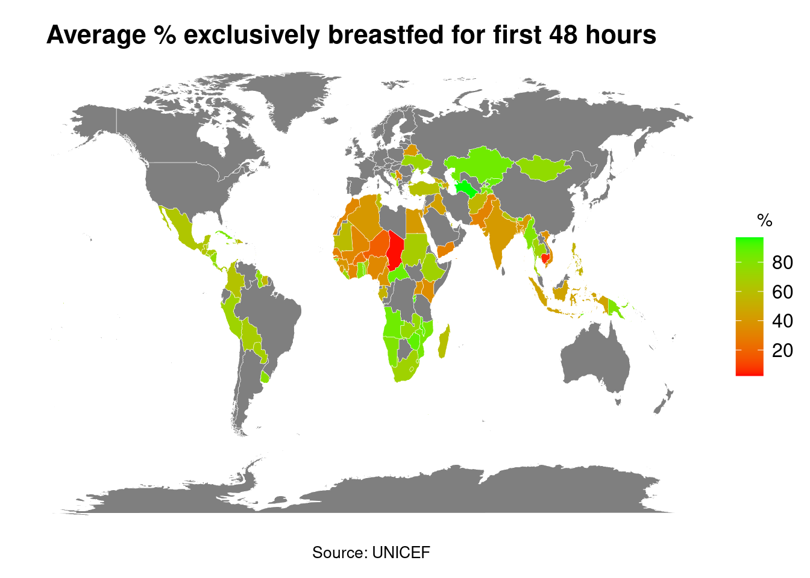

The Lactation Chronicles
A sequel to Chad’s Milkyway
Introduction
Breastfeeding is recognised by health experts worldwide as critical for child development and maternal health. It offers unparalleled health benefits such as immune support for infants and reduced disease risk for mothers. Despite its importance, breastfeeding rates vary significantly across different regions and socioeconomic backgrounds. Analysing breastfeeding data enables us to identify patterns, understand disparities, and evaluate the impact of public health policies and economic factors on breastfeeding practices. This report utilises comprehensive global data to explore these variations and aims to provide actionable insights that can support efforts to improve public health strategies and advocate for effective breastfeeding support programs worldwide.
A Geographical Overview
Firstly, we present a world map that paints a picture of breastfeeding rates across different countries. This visualisation allows us to observe the vast differences in breastfeeding practices and highlights regions where rates are particularly high or low. From first glance we can clearly see CHAD (situated in north central Africa) has the lowest average percentage of all the countries.
Continental Comparison
The next Visualisation is a simple but effective bar chart that analyses the average breastfeeding rate by continent. As can be clearly seen, all the continents are of a similar average providing us with valuable inisght. This tells us that breastfeeding isnt influenced purely by economic factors - Europe typically seen as a very wealthy continent has the same average as Africa which is typically seen as a much poorer continent. We can also take from the bar chart that Geographical Location has no real bearing on breastfeeding rates either. With every continent being above 60%, the question remains Why is Chad so low when it comes to breastfeeding rates.
Investigating Correlations
The scatter plot below delves into the relationship between breastfeeding rates and life expectancy in various countries. Life expectancy is like a performance appraisal for a country. The higher the figure, usually the more advanced the country. More advanced by a better health care system, better education and generally a higher standard of living.
We can see from the scatter plot that breastfeeding rates are not influenced too much by a country’s life expectancy. While there is no denying maternal deaths would have a great impact, the graph shows a relatively even distribution between the 4 quartiles.
Once again, Chad is clearly noticeable as it is the lowest point on the scatter plot. This signifies it is well below both averages (average marked by dashed line) meaning while life expectancy is influencing Chad’s breastfeeding rates it is mainly influenced by other factors.
GDP and Breastfeeding
This time series graph tracks GDP per capita over several decades for countries with the lowest breastfeeding rates. It’s significant in showing how economic growth trajectories can correlate with health outcomes like breastfeeding rates. For instance, a country showing consistent economic growth might have more resources for public health initiatives that promote breastfeeding.
While all of these countries have extremely low breastfeeding trends, their GDP per capita doesnt follow the same trend. This is illustrated by the fact we see for example Chad at the bottom with low GDP per capita and a relatively stationary trend, Vietnam who’s GDP per capita has spiked up and continues to rise and lastly Yemen who’s GDP per capita has plummeted in the last decade. This illustrates that Breatsfeeding rates are not influenced majorly by economic factors.
Conclusion
Despite challenges like limited data and unique cultural factors, our analysis underscores the importance of understanding and addressing determinants of breastfeeding practices. To achieve this I belive increased quality and range of data is needed. Unfortunately the data presented to me was very sparse and therefore difficult to make a report out of it.
However this dashboard was very successful highlighting the multifaceted nature of Breastfeeding rates and the worrying low rates in Chad. Our geographical analysis highlighted Chad’s notably low breastfeeding rates, prompting a deeper inquiry into the underlying reasons. The continental comparison revealed a surprising uniformity in breastfeeding rates, suggesting the influence of factors other than wealth or geographical placement. Further, our scatter plot analysis indicated that while life expectancy does not directly dictate breastfeeding practices, it can reflect broader health and social issues that may affect them. Finally, the time series on GDP per capita demonstrated that economic prosperity does not ensure higher breastfeeding rates, as seen in the diverse economic trajectories of countries with low breastfeeding practices.
Chad’s consistently low breastfeeding rates highlight the urgent need for targeted interventions. Our findings emphasise the need for tailored policies to promote breastfeeding and improve maternal and child health globally. I believe education to be the key to achieving higher breastfeeding rates.